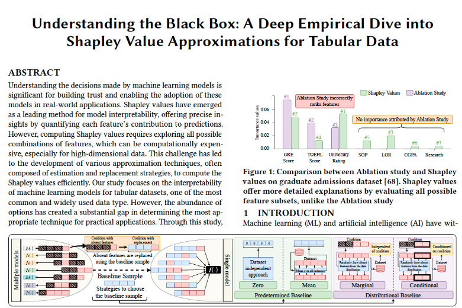

Hi! I am a PhD student in Computer Science and Engineering at The Ohio State University, specializing in interpretability and fairness in machine learning. I hold a Bachelor's degree in Computer Science from Rutgers, The State University of New Jersey. Previously, I had the opportunity to work with Prof. Eshed Ohn-Bar on advancing vehicle keypoint detection under extreme occlusion and truncation.
My research focuses on fair and interpretable AI, aiming to understand the internal representations and decision-making processes of complex models. My current work centers on high-order attention mechanisms for transformers, aiming to enhance their interpretability and reasoning capabilities in multimodal and structured data settings.

Suchit Gupte, John Paparrizos
Sigmod 2025
Technologies: LLMs, Deep Learning
The Reversal Curse paper highlights a simple task that these models fail at. If the model has seen A is B, it is not guaranteed that the model can generalize B is A - this is coined as Reversal Curse in the paper. Expanding on this, my work investigates whether this limitation extends to logical equivalences—specifically, whether models trained on "A implies B" can infer "not B implies not A." This research evaluates the model’s ability to reason beyond memorization.
[Report] [Presentation]Technologies: HTML, CSS, JavaScript, PyDeck
BirdViz is an interactive data visualization tool developed to explore and analyze bird sightings data. It utilizes datasets from the Macaulay Library and NEON Breeding Birds Dataset to provide interactive maps, species identification analysis, and graphical visualizations. Designed for researchers, conservationists, and bird enthusiasts, BirdViz transforms complex ecological data into meaningful insights for better understanding avian biodiversity.
[Code] [Presentation]Technologies: ViTPose, Deep Learning
Incorporated 62 vehicle keypoints into CARLA (urban driving simulation) vehicle CAD models to introduce a novel synthetic benchmark that is an order of magnitude larger than existing datasets.Trained and analyzed a transformer-based keypoint detection model ViTPose to uncover the impact of keypoint visibility and type, common failure modes, and generalization capabilities of a state-of-the-art model for the fine-grained occluded and truncated (out of camera view) keypoint detection task.
[Paper] [Presentation]Technologies: Python, Computer Vision
Supervised by Prof. Dinesh Jayaraman, developed an augmented reality application that projects 3D objects into real-world environments by accurately estimating camera pose.
Technologies: Python, Computer Vision
Supervised by Prof. Dinesh Jayaraman, implemented two-view and multi-view stereo algorithms to generate 3D scene reconstructions from multiple 2D viewpoints, including view rectification, disparity, and depth map computation, resulting in a detailed point cloud.
Technologies: Python, Computer Vision, Deep Learning
Supervised by Prof. Dinesh Jayaraman, trained an optical character recognition model pix2tex to convert images of mathematical expressions into accurate LaTeX code using a supervised learning approach.